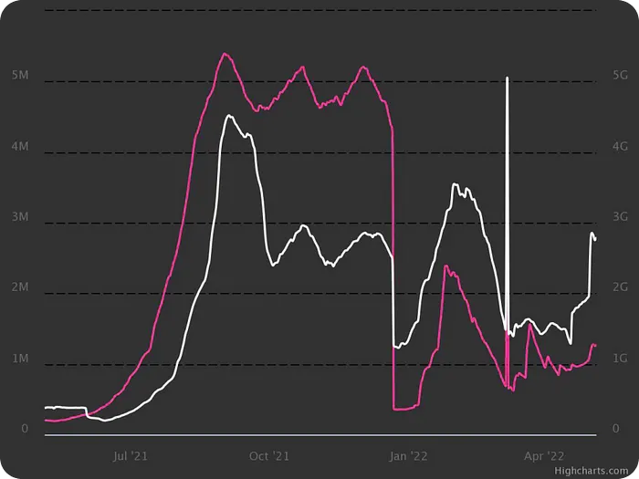
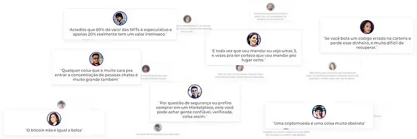
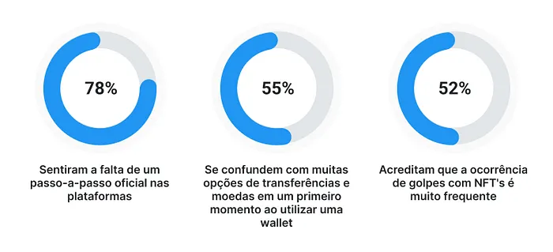
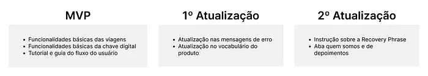
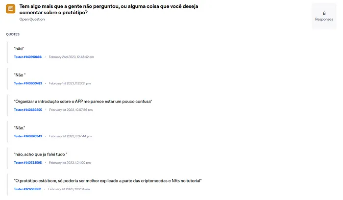
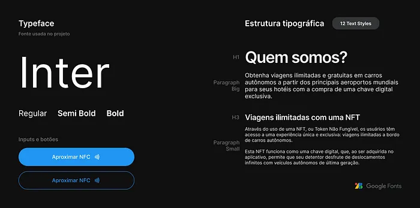
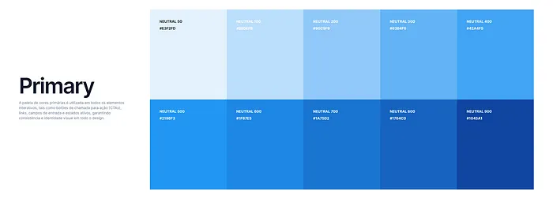
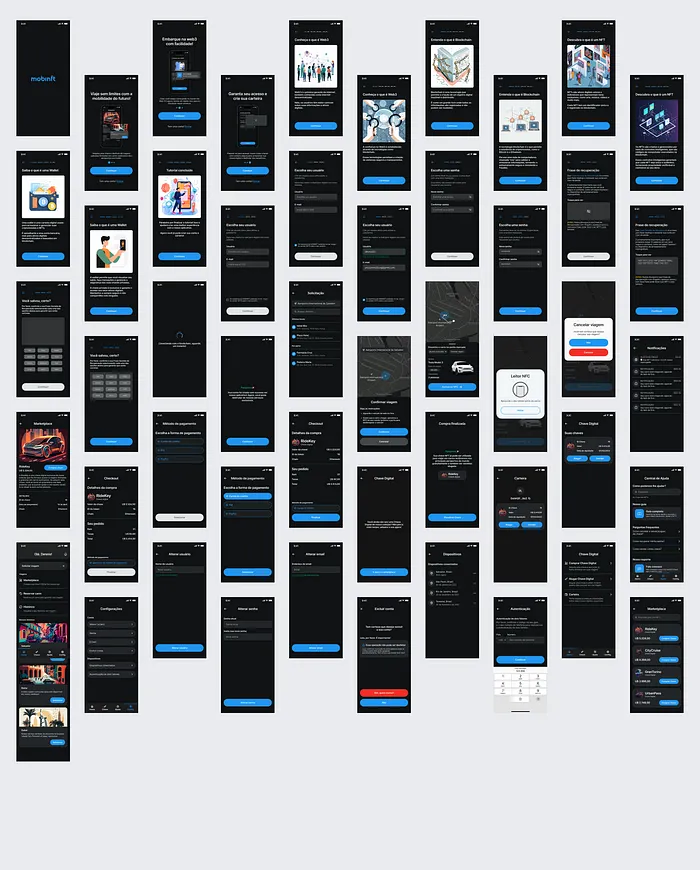

Mobinft - Descomplicando a Web3: Simplificando o processo de compra de NFT's Mobinft - Uncomplicating Web3: Simplifying the NFT purchasing process
Aprimorando a jornada de compra de NFTs com UX Design: técnicas e estratégias. Improving the NFT purchasing journey with UX Design: techniques and strategies.
🤔 O problema
🤔 The problem
O Mobinft proporciona viagens em carros autônomos ilimitadas a partir de aeroportos para usuários que possuam uma chave digital (NFT).
Mobinft provides unlimited autonomous car rides from airports for users who own a digital key (NFT).
No entanto, adquirir essa chave pode ser um desafio para novos usuários devido ao conhecimento técnico requerido. Com o objetivo de tornar o processo mais acessível a todos, a empresa está trabalhando para simplificá-lo.
However, acquiring this key can be a challenge for new users due to the required technical knowledge. Aiming to make the process more accessible to everyone, the company is working to simplify it.
📈 O cenário atual
📈 The current scenario
Os usuários podem enfrentar desafios para se adaptar à tecnologia de NFT (non-fungible token), pois podem achar ela complexa. De acordo com estatísticas, apenas 2,8% dos americanos possuem um NFT atualmente e 3,9% planejam possuir algum dia. Além disso, o estudo "Non-Fungible Token (NFT): Overview, Evaluation, Opportunities and Challenges (2021)" destaca problemas de usabilidade como a confirmação lenta para transações no sistema e taxas elevadas. No entanto, é importante notar que o mercado de NFTs está em constante crescimento e apresenta muitas oportunidades. Em 2021, foram realizadas mais de 27 milhões de vendas de NFT e o volume de dólares negociados foi de $17 bilhões, o que representa um aumento de mais de 21.000% em relação ao ano anterior.
Users might face challenges adapting to NFT (non-fungible token) technology, as they can find it complex. According to statistics, only 2.8% of Americans currently own an NFT and 3.9% plan to own one someday. In addition, the study "Non-Fungible Token (NFT): Overview, Evaluation, Opportunities and Challenges (2021)" highlights usability issues such as slow transaction confirmation in the system and high fees. However, it's important to note that the NFT market is constantly growing and presents many opportunities. In 2021, over 27 million NFT sales were made and the volume of traded dollars reached $17 billion, representing an increase of over 21,000% compared to the previous year.

🎯 Objetivo de negócio
🎯 Business objective
Com base em nosso entendimento aprofundado do mercado e do problema em questão, estabelecemos uma meta clara a ser alcançada por meio da solução proposta:
Based on our in-depth understanding of the market and the problem at hand, we established a clear goal to be achieved through the proposed solution:
"Nosso objetivo é aumentar em 20% da base de clientes em 3 meses, simplificando o processo de transação e gestão de NFT's, além de investir em estratégias de marketing para proporcionar uma oportunidade única de investimento e entretenimento para nossos clientes."
"Our goal is to increase our customer base by 20% in 3 months, by simplifying the transaction and management process of NFTs, along with investing in marketing strategies to provide a unique investment and entertainment opportunity for our clients."
🔎 Resultados da Pesquisa de UX - Entendendo as Necessidades dos Usuários
🔎 UX Research Results - Understanding User Needs
Com base em nossa pesquisa, realizada por meio de entrevistas, supomos que a falta de tutoriais e guias claros possa representar um grande obstáculo para a compra de NFTs.
Based on our research, conducted through interviews, we assume that the lack of clear tutorials and guides may represent a major obstacle for purchasing NFTs.

Em relação à pesquisa quantitativa, aproximadamente 80% dos usuários indicaram que sentiram falta dos seguintes elementos:
Regarding the quantitative research, approximately 80% of users indicated that they missed the following elements:

💡 Ideação e Priorização
💡 Ideation and Prioritization
Com base nos resultados da pesquisa, optamos por concentrar nossos esforços no desenvolvimento de um tutorial e guia de fluxo do usuário, visando aprimorar a experiência de compra de NFTs.
Based on the research results, we decided to focus our efforts on developing a tutorial and user flow guide, aiming to improve the NFT purchasing experience.

✏️ UI Design e Prototipação
✏️ UI Design and Prototyping
Após concluir a primeira versão do wireframe, realizamos um teste de usabilidade com 6 participantes sem experiência prévia com NFTs. Durante esse processo, identificamos problemas no tutorial inicial do aplicativo.
After completing the first version of the wireframe, we conducted a usability test with 6 participants with no previous experience with NFTs. During this process, we identified issues in the app's initial tutorial.

Após os testes de usabilidade dos wireframes de baixa fidelidade, criamos um Design System com o objetivo de melhorar a experiência do usuário por meio de uma interface moderna, acolhedora e confiável.
After usability testing of the low-fidelity wireframes, we created a Design System aiming to improve the user experience through a modern, welcoming, and reliable interface.


Após realizar os ajustes finais no tutorial, mudando a abordagem de ensino dos conceitos e a ordem deles, construímos um protótipo de alta fidelidade do aplicativo.
After making final adjustments to the tutorial, changing the teaching approach to concepts and their order, we built a high-fidelity prototype of the app.

Após realizar um teste final com 5 usuários, conseguimos solucionar o problema do tutorial. No entanto, notamos que durante a compra de chaves, os usuários clicaram mais em "marketplace" do que em "chave". Isso destaca a necessidade de aprimorar as opções de compra em futuras versões.
After conducting a final test with 5 users, we managed to solve the tutorial issue. However, we noticed that during key purchases, users clicked more on "marketplace" than on "key". This highlights the need to improve purchasing options in future versions.